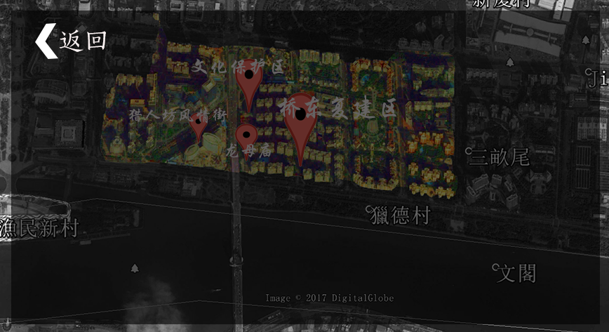

| 细说龙母庙 |
在丰富多彩的中华文化里，最为迷人与神秘的莫过于“龙”的传说了。 在志怪古籍《山海经》当中，存在不少关于“龙”的记载:《大荒经》里写了“烛龙”；《大荒东经》和《大荒北经》里写了“应龙”；《大荒东经》里写了“夔龙”；《海内经》里写了“蛟龙”。其中，就有一段文字解释“南方多雨”，就因为是“应龙”的缘故。 作为历史悠久的水乡猎德，在它的文化传统当中，当然也存在着“龙”的影子。村中有一座供奉着“龙母温夫人”的庙，那正是猎德龙母庙。 “猎德现在的祠堂或者庙宇都保留了未拆之前的很多东西，包括修建的材料，也是用回原来祠堂和庙宇的，拆下来，搬到这里，再完完整整地建起来。”村民说道。 旧时的龙母庙准确的修成时间已无法考证了，大致是在宋元年间。现在的这座龙母庙是在猎德村改造后重新修建的。村民回迁后，在这里举行了一个新庙落成的开光仪式，祈求龙母保佑猎德村风调雨顺，人丁兴旺，村民身体健康。 宗祠可以说是猎德最有特色的文化遗迹。猎德村现存祠堂约 10 座，如珍珠般散落在村内 一平方公里的范围内。密度如此之高，在整个广州市无出其右者。祠堂分宗族祠堂和私家祠堂两类，宗族祠堂有李氏大宗祠、林氏大宗祠和梁氏宗祠各 1 座，私家祠堂 6 座。此外，村内还有家塾两座。这些祠堂始建于嘉庆、道光、光绪年间不等，是岭南古建筑文化的结晶。其中的雕刻艺术更是经数百年而光芒不散，雕梁画栋、镂窗刻檐，神韵尤在。从材料上看，有木雕、石雕、砖雕；从内容上看，有人物、花鸟、故事等。在各个祠堂里， 精细的刀法，神情毕肖的人物，富于立体感的画面仍清晰可见。 万福李公祠的廊下大梁，整体饰以雕刻，雕刀深入木头尺许， 形象之生动，造型之大气，让人叹服不已 。 祠最重要的功能是祭祀祖先，复建祠虽延续祭祖、娱乐、设宴等原真性功能，而祭祀活动在城市生活逐渐简化，乐设宴等活动得到强化，从复建中不严格遵守中轴对称、新增厨房的平面布局得到印证，祠成为盈利性的世俗场所。
|
|  |